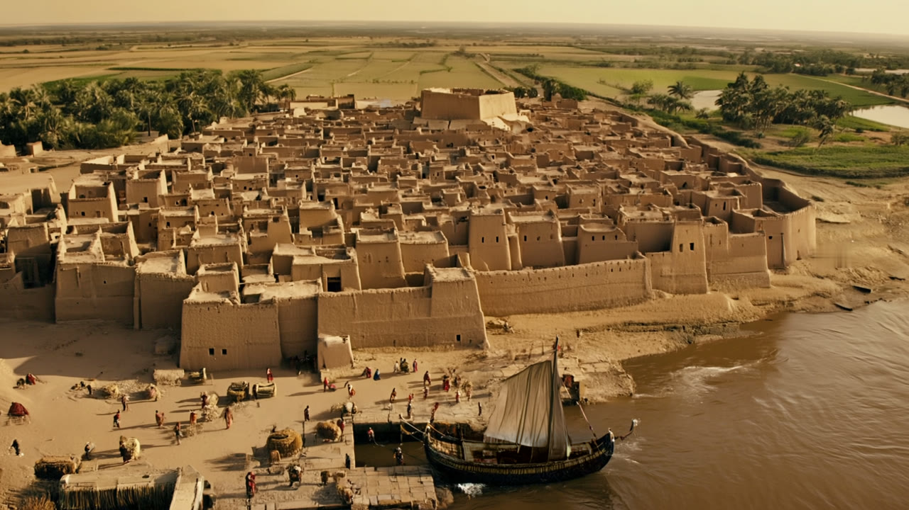
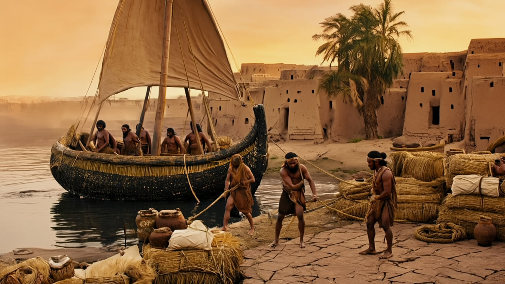
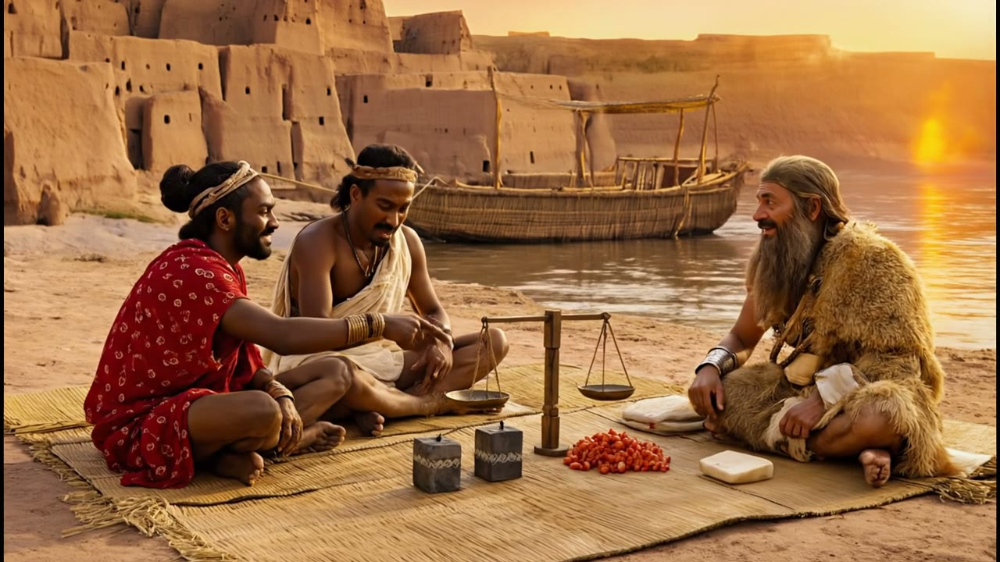
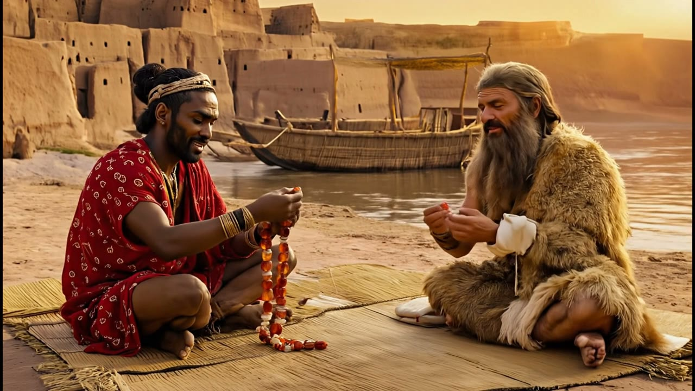
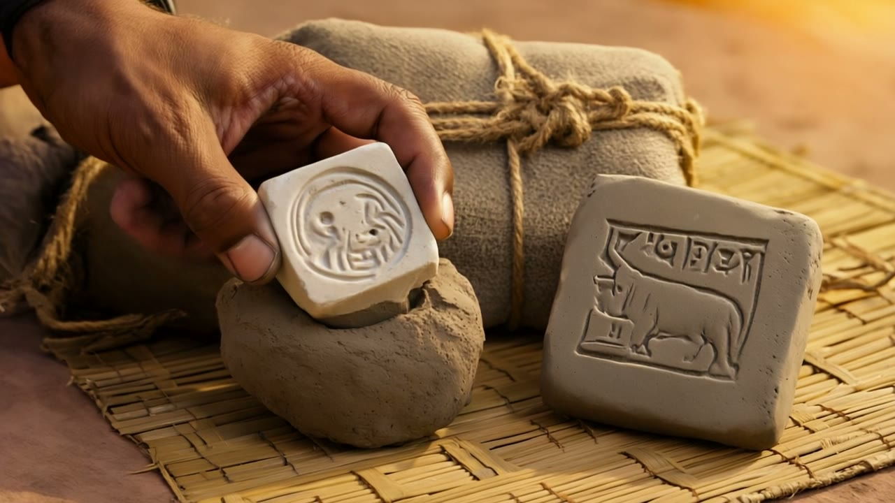
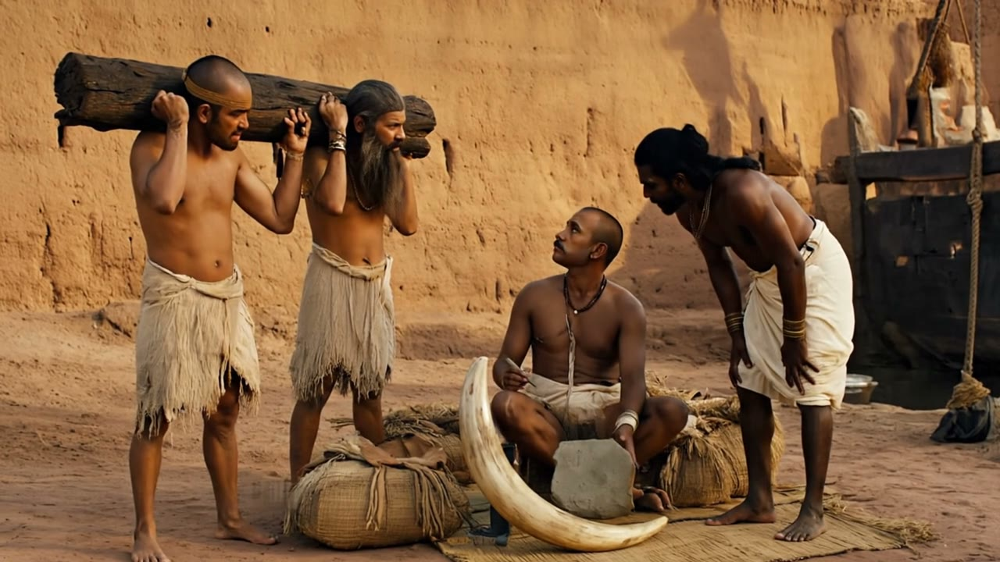
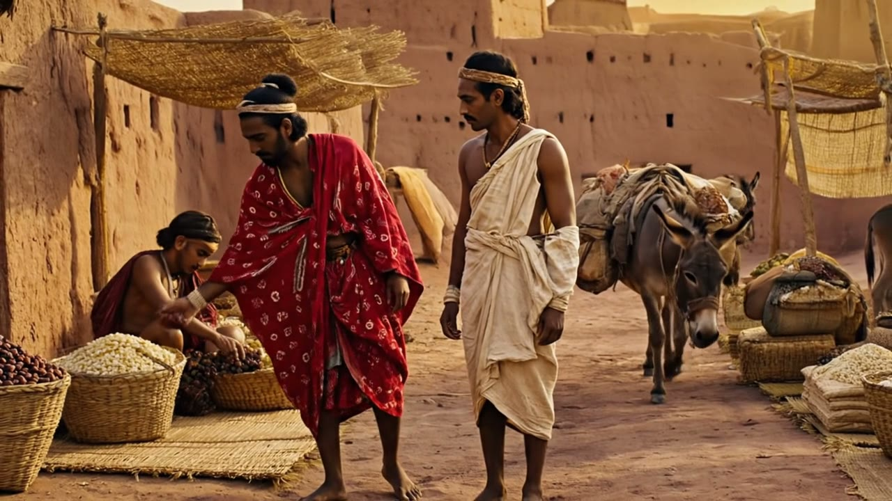

A Ship from Meluhha: storyboard v3
Every shot checked against the same list. New shots are stills only; video is made after you approve.
Checklist
- ShipSeagoing: reed bundles coated in black bitumen, high curved ends, A-frame mast, square sail, crew of 8–10. Same ship in every shot.
- BuildingsLow, plain, flat-roofed mudbrick; small doorways. No towers, arches, battlements or framed windows.
- ScalePeople in true proportion to houses and ship.
- ClothingUndyed wool and linen in beige and grey; Meluhhans in cotton. No bright white robes, headscarves or hoods. Bare feet.
- PropsClay, reed, wood, stone only. Nothing metal, plastic, painted bright or printed. No cars, tanks or modern boats.
- StorySky → ship arrives → docking → trading → beads → sealing → unloading → market.
Shots







Cost to finish
| Work | Credits |
|---|---|
| 1 Opening: animate (Veo) | 80 |
| 2 Docking: animate (Veo) | 80 |
| 5 Seal: new still + Veo | 88 |
| 6 Unloading: new still + Veo | 88 |
| Optional: 3 Trading with small weights | 88 |
| Total (without / with optional) | 336 / 424 |
Credits available: 1,160. That leaves room to redo any shot if needed.